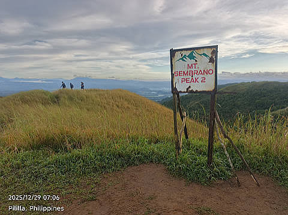
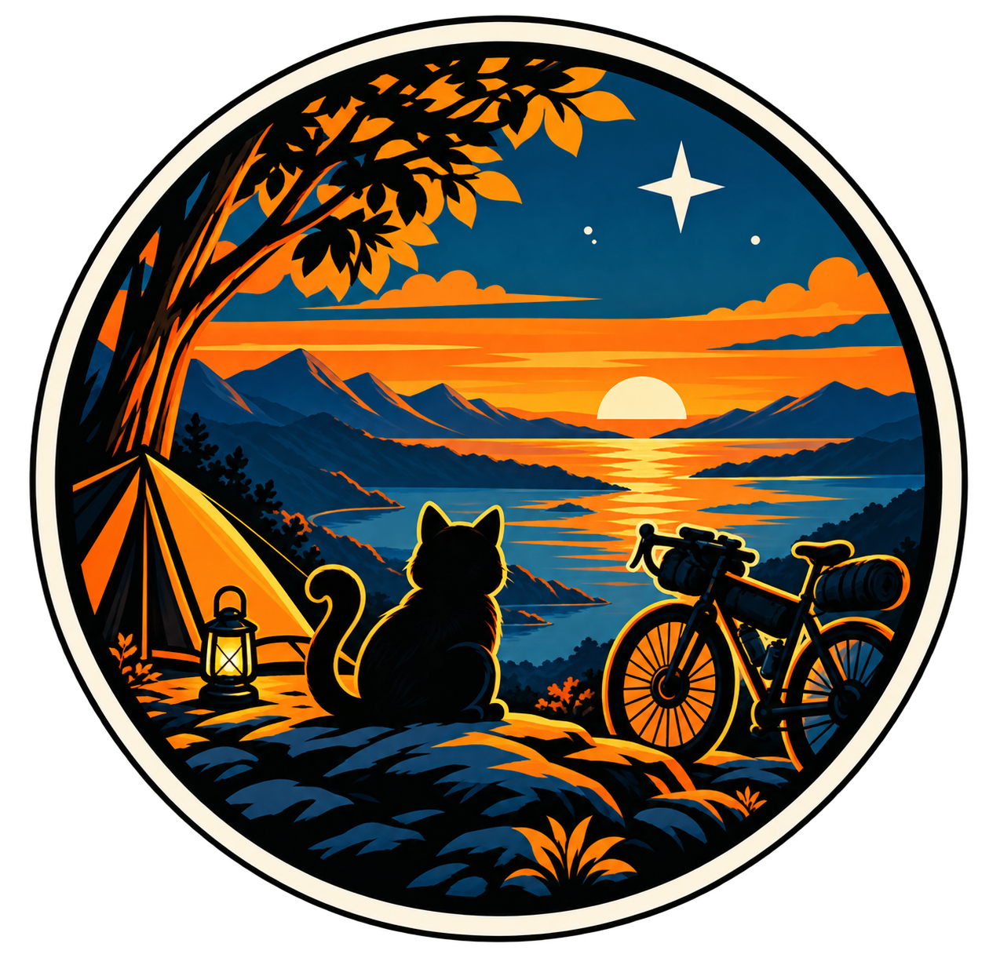
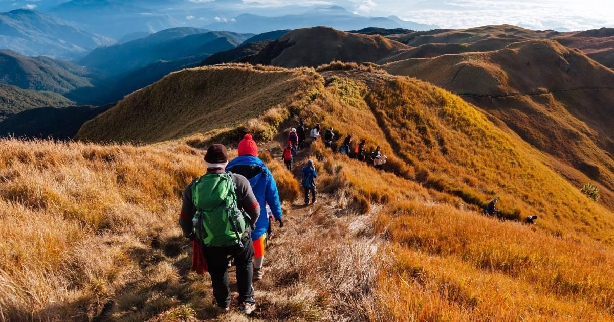
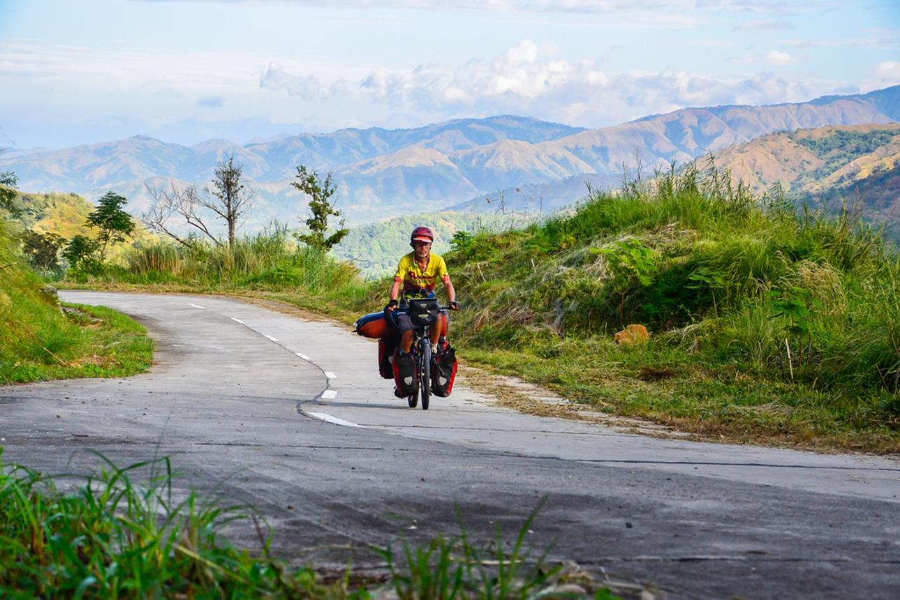

My First Adventure
A short story about a journey, what happened, and what I learned.
Explore
EXPLORE • CREATE • DISCOVER


LIX CURIOSITY is a collection of the things I have learned, explored, built, and experienced along the way. It is my digital journal for documenting projects, adventures, experiments, and the things that keep me curious.
From IT and web development to cycling, outdoor adventures, music, 3D printing, and random ideas that suddenly appear in my head, this website is a place where I can keep track of the journey.
Some of these projects started as simple ideas, while others came from things I wanted to learn or problems I wanted to solve. This section is where I document the things I build, experiment with, and work on.
Here are some of the projects I have worked on:

A short story about a journey, what happened, and what I learned.
Explore
Hikes, trails, challenges, and the places I've explored.
Explore
Routes, gear, long rides, and everything I discover along the way.
ExplorePlaces, experiences, random discoveries, and stories worth remembering.
ExploreI want to spend more time outdoors and experience places beyond the usual routine. This section will document hikes, bikepacking trips, camping adventures, travel, and the stories that come with them.
I have always been interested in learning different things, even when those interests seem completely unrelated. This section is a record of the skills and hobbies I am currently exploring.
I am continuously expanding my knowledge in the following areas:
THE FUCK ARE YOU AFRAID OF Death: It's part of life. Bankruptcy: You can make it back. Shame: Everyone will forget. Rejection: It happens to everyone. Failure: It's part of growth. Judgement: They'll judge you anyway. Losing people: Not all are meant to stay. Mistakes: You learn from them. Taking risks: Regret hurts more. LIVE EVERY DAY LIKE IT'S YOUR LAST
If you want to connect, share an idea, talk about a project, or simply say hello, feel free to reach out.